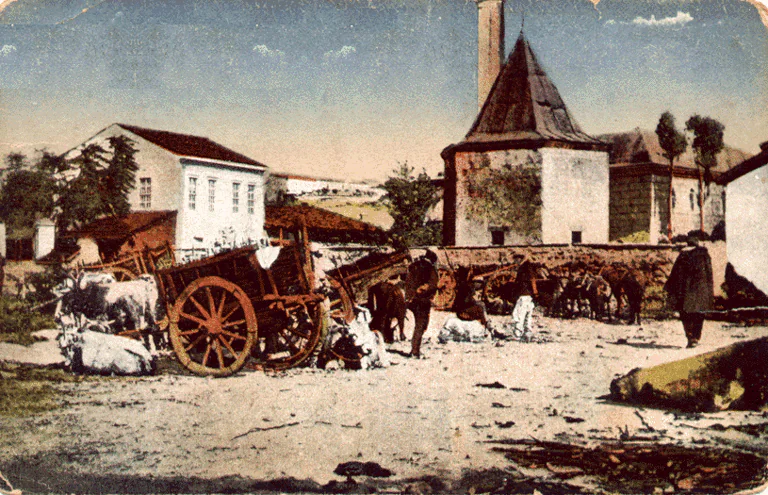
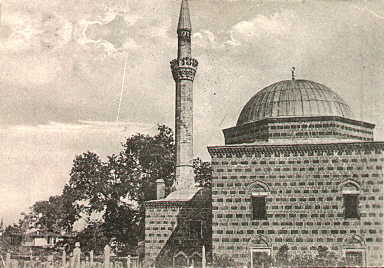
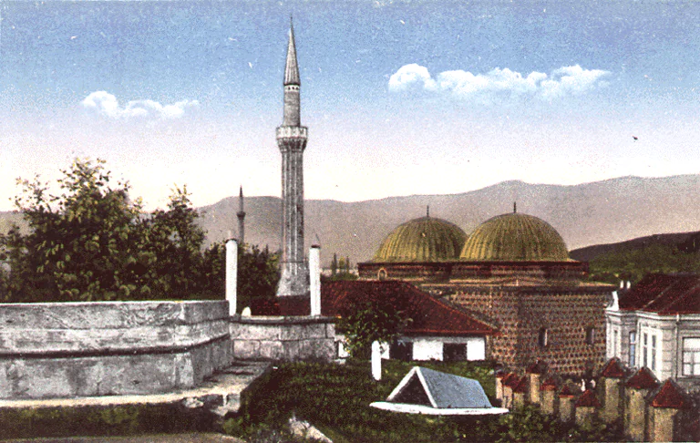
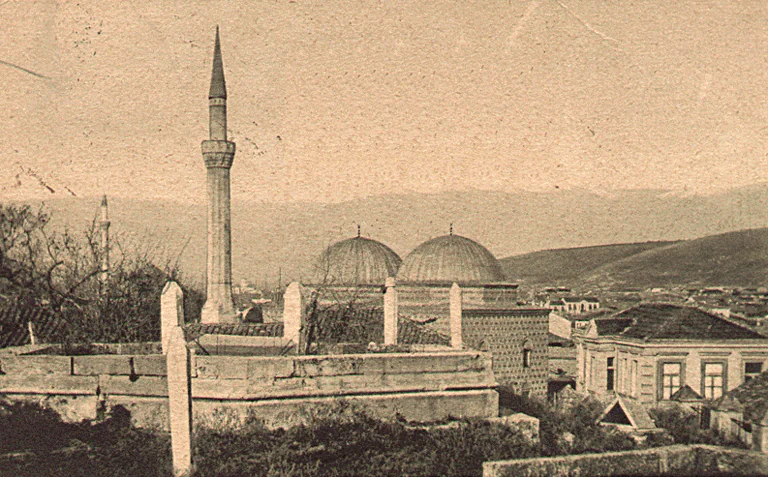
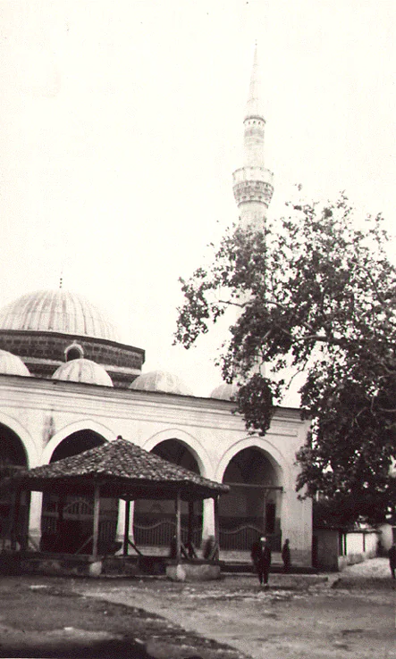
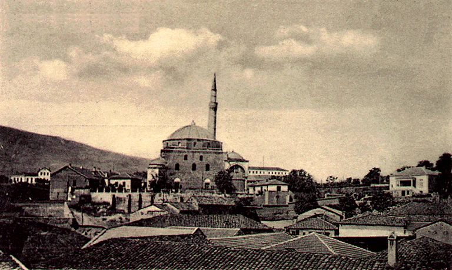

Përshkrimi
Xhamia Burmali, fotografuar rreth mesit të shekullit XIX: e vetmja xhami në bregun e djathtë të Vardarit, pranë Urës së Gurit. Emrin e mori nga trupi spiral (burmali) i minares së saj. U ndërtua nga fundi i shekullit XV dhe u shemb më 1925, që në vendin e saj të ndërtohej Shtëpia e Oficerëve.

Xhamia Burmali dhe disa ndërtesa përreth saj. Rrugë e paformuar. Vend grumbullimi i karrocierëve me qerre me qe për mallra tregtare. - fundi i shekullit XIX

Xhamia Burmali - 1912 - 1918. Afrimi jugor drejt Urës së Gurit, me dyqane tregtarësh e zejtarësh të radhitura dendur.

Xhamia Burmali me një pjesë të Urës së Gurit dhe shëtitoren pranë saj. Majtas saj duken ndërtesat e ngritura në hyrje të Urës së Gurit, ku ndodheshin dyqane dhe zejtarë. - vitet 1910.

Xhamia Burmali - fillimi i viteve 1920. Para urës vërehen kioskat e para për shërbim e shitje kalimtarësh, me detaje arkitektonike të theksuara, sidomos në formën e çative.

Xhamia Burmali - 1920.

Xhamia Hatunxhuk me tyrben. Në sfond duket minareja e Xhamisë së Jahja Pashës. Xhamia Hatunxhuk daton nga viti 1511 dhe e ndërtoi Hani Hatuni, një nga vajzat e Jahja Pashës. Emri i xhamisë, Hatunxhuk, do të thotë zonjë e vogël ose zonjushë. - fundi i shekullit XIX.

Xhamia e Haxhi Balabanit. Ndodhet midis Kurshumli Hanit dhe Xhamisë Dukanxhik. Ndërtuar në shekullin XV. (fundi i shekullit XIX)

Kulla e Beut (ose Kulla feudale). Kjo kullë i përkiste një beu. Ndodhet para hyrjes kryesore të Shtëpisë së sotme të Armatës së Republikës së Maqedonisë. Koha e ndërtimit nuk dihet, por supozohet se u ngrit në fund të shekullit XVII ose në fillim të shekullit XVIII. Fotografia është nga shekulli XIX.

Kulla e Beut në fund të shekullit XIX.

Kulla e Beut në fillim të shekullit XX.

Kulla e Beut, vitet 1910.

Xhamia e vjetër Kazanxhiler, pranë Kurshumli Hanit. Ndërtuar në shekullin XV, e njohur si xhamia e kazanxhinjve. (sot nuk ekziston)

Xhamia Dukanxhik, ndërtuar në mesin e shekullit XVI.

Kurshumli Hani, ndërtuar në mesin e shekullit XVI, është vepër monumentale e arkitekturës laike islame. Ndodhet në çarshinë e vjetër të Shkupit, pranë Muzeut të sotëm të Maqedonisë.

Kulla e Sahatit dhe Xhamia e Sulltan Muratit - vitet 1920. Kulla e Sahatit u ngrit në mesin e shekullit XVI (1566-1572), si kulla e parë e sahatit në shtetin osman. Mekanizmi i orës dhe mjeshtri që duhej të kujdesej për të u sollën nga Sigeti në Hungari, pasi turqit e morën qytetin. Xhamia e Sulltan Muratit: sulltani Murati II, babai i Sulltan Mehmetit Pushtues, e ngriti këtë xhami si vakëf të tij më 1436.

Xhamia e Sulltan Muratit, vitet 1910.

Kulla e Sahatit dhe Xhamia e Sulltan Muratit - vitet 1920.

Kulla e Sahatit dhe Xhamia e Sulltan Muratit - vitet 1920.

Kulla e Sahatit dhe Xhamia e Sulltan Muratit - vitet 1920.

Kulla e Sahatit dhe Xhamia e Sulltan Muratit - vitet 1920.

Xhamia e Gazi Isa Beut - vitet 1920. E ngriti Isa Beu, i biri i Isak Beut, i cili e ndërtoi xhaminë pas vdekjes së të atit si vakëf. (shekulli XV)

Xhamia e Gazi Isa Beut - vitet 1920. E ngriti Isa Beu, i biri i Isak Beut, i cili e ndërtoi xhaminë pas vdekjes së të atit si vakëf. (shekulli XV)

Xhamia e Gazi Isa Beut - vitet 1920. E ngriti Isa Beu, i biri i Isak Beut, i cili e ndërtoi xhaminë pas vdekjes së të atit si vakëf. (shekulli XV)

Xhamia e Gazi Isa Beut - vitet 1920.

Varrezat turke, me Xhaminë e Gazi Isa Beut në sfond - vitet 1920.

Xhamia e Gazi Isa Beut - oborri - vitet 1920.

Xhamia e Gazi Isa Beut - oborri - vitet 1920.

Xhamia e Mustafa Pashës - vitet 1920. U ngrit më 1492 nga komandanti i atëhershëm Mustafa Pasha.

Xhamia e Mustafa Pashës - vitet 1920. U ngrit më 1492 nga komandanti i atëhershëm Mustafa Pasha.

Xhamia e Mustafa Pashës - vitet 1920.

Xhamia e Mustafa Pashës në sfond, dhe poshtë saj, pjesërisht, Xhamia e Pasha Jigit Beut, xhamia më e vjetër në Shkup. (sot nuk ekziston) - vitet 1920.

Rrugë në pjesën e vjetër të qytetit, me Xhaminë e Isak Beut, ose Xhaminë Alaxha, në sfond. Këtë xhami e ngriti komandanti i Shkupit Isak Beu (i biri i Pasha Jigit Beut, pushtuesit të Shkupit), në gjysmën e parë të shekullit XV, më 1438. Përveç xhamisë, si vakëf ngriti edhe tyrbe, medrese, hane dhe ndërtesa të arkitekturës laike islame. Më 1519 xhamia u rindërtua dhe iu shtuan dy nefet anësore nga Mehmeti, nipi i Isak Beut - vitet 1920.
Orientimi

Në hartën e vjetër orientuese
Albumi i fotografive


Tema
 Ujësjellësi4 kartolina
Ujësjellësi4 kartolina Kalaja30 kartolina
Kalaja30 kartolina Urat60 kartolina
Urat60 kartolina Kej58 kartolina
Kej58 kartolina Sheshi46 kartolina
Sheshi46 kartolina Ndërtesat66 kartolina
Ndërtesat66 kartolina Kishat e krishtera19 kartolina
Kishat e krishtera19 kartolina Objektet myslimane33 kartolina
Objektet myslimane33 kartolina Shtëpia e Oficerëve29 kartolina
Shtëpia e Oficerëve29 kartolina Teatri28 kartolina
Teatri28 kartolina Stacioni hekurudhor13 kartolina
Stacioni hekurudhor13 kartolina Shkollat36 kartolina
Shkollat36 kartolina Parqet12 kartolina
Parqet12 kartolina Tregjet18 kartolina
Tregjet18 kartolina Rrugët38 kartolina
Rrugët38 kartolina Panorama I60 kartolina
Panorama I60 kartolina Panorama II30 kartolina
Panorama II30 kartolina Kolazhe55 kartolina
Kolazhe55 kartolina Përmbytjet9 kartolina
Përmbytjet9 kartolina Tërmeti27 kartolina
Tërmeti27 kartolina Shkupi 200026 kartolina
Shkupi 200026 kartolina